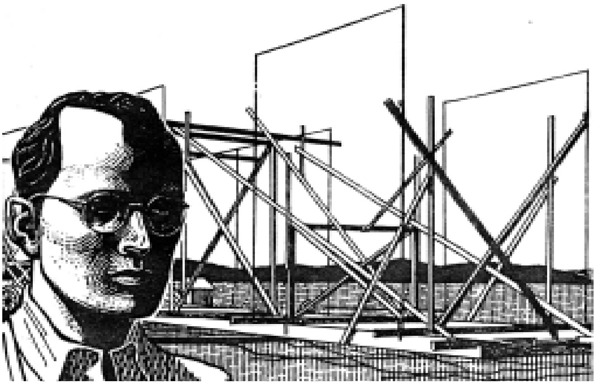
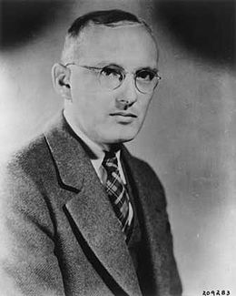
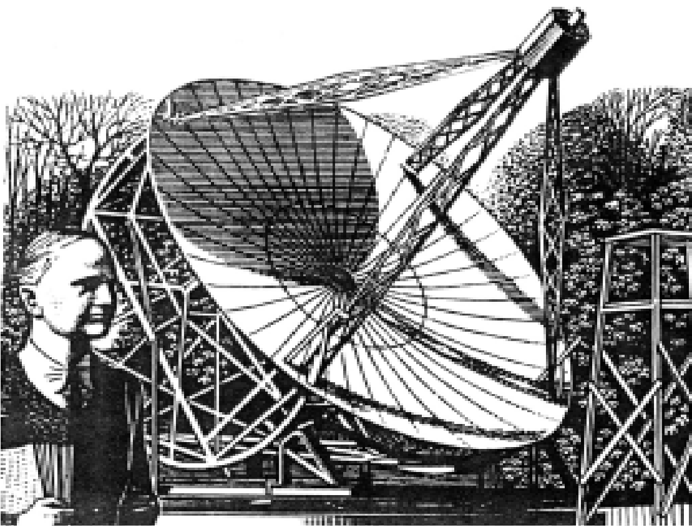

Vào một buổi chiều tà trời quang mùa hè năm 1931, cách thành phố New York 82km về phía tây nam, một kỹ sư vô tuyến điện chăm chú ngồi nghe bên máy thu sóng vô tuyến, bộ ống nghe áp tai quàng trên đầu. Qua cửa sổ phòng thí nghiệm, ông có thể thấy một cấu trúc kỳ quặc dài 30m gồm các ống đồng và các thanh gỗ giằng, trông như bộ khung của một ngôi nhà hẹp. Cấu trúc ấy cứ kêu lên đều đều những tiếng cót két, được xoay bởi một động cơ đặt ở giữa. Thiết bị khác thường này thật ra là một bộ anten lớn để thu sóng vô tuyến, cứ mỗi 20 phút nó xoay trọn một vòng. Và cứ mỗi 20 phút, người kỹ sư đang ngồi nghe lại cau mày sửng sốt. Ông thầm thì: "Nó ỏ đấy, cũng chính tiếng rít đều đặn và yếu ớt này".
Tiếng rít dường như đang lắng xuống về hướng tây, cùng với Mặt trời.

.
Người kỹ sư trẻ ấy tên là Karl Guthe Jansky, ông đang dò tìm tạp âm bí ẩn ngang qua bầu trời cho tới khi nó xuống khuất dưới đường chân trời vào lúc hoàng hôn. Ông mệt mỏi tháo bộ ống nghe, mặc chiếc áo khoác và rời khỏi phòng thí nghiệm.

Bên ngoài, vùng nông thôn đã trở nên tối sẫm. Jansky khởi động ô tô và lái nó dọc theo đường quốc lộ hướng về nhà ông ỏ Little Silver bang New Jersey.
Trên đường đi, Jansky cứ trăn trỏ mãi về tạp âm bí ẩn này. Theo ông biết, các con bão gây ra tạp âm vô tuyến, nhưng tạp âm ấy rất khác vói tạp âm này. Ông đã chế tạo thiết bị của mình để nghiên cứu bão tĩnh và đã chứng minh rằng các xung mãnh liệt của tạp âm vô tuyến được tạo ra bởi các con bão có sấm sét. Ông đã nghe các con bão cách xa đến 230km. Nhưng tiếng rít yếu ót mà ông đã nghe hôm nay và những ngày trưóc đó vẫn tiếp tục, theo sau là một bộ hành trình ngang qua bầu trời thay vì đến từ mọi hướng như bão tĩnh. Jansky thầm thì thành tiếng: "Bất kể nó là gì, nhưng chắc chắn nó không phải do bão gây ra. Theo như mình có thể nói, xem ra hầu như nó theo cùng một đường đi của Mặt trời ngang qua bầu trời. Có lẽ tạp âm này là của Mặt trời!"
Lúc về đến nhà, ông nói vói vợ là Alice rằng ông đã nghe được tạp âm vô tuyến đến từ rất xa bên ngoài Trái đất.
Những ngày tiếp theo, Jansky ngồi trong phòng thí nghiệm và nghe đi nghe lại tiếng rít yếu ót. Nó yếu đến mức chẳng mấy ai bận tâm để nghe, vì hầu như nó không ồn hon tiếng kêu vo vo của máy thu sóng. Nhưng đối vói Jansky, người đang tìm kiếm từng nguồn tạp âm vô tuyến có thể có cho Công ty Điện thoại Bell, thì lại bám chặt nó.
Cấp trên trực tiếp của Jansky là Harald Friis, ông hỏi:
- Nếu tạp âm đó quá yếu, tại sao anh phải bận tâm vói nó? Xét cho cùng, công việc của anh là tìm kiếm tạp âm nào sẽ gây nhiễu cho liên lạc điện thoại vô tuyến. Đấy là điều mà Công ty Điện thoại Bell đang quan tâm.
Jansky không có câu trả lời thỏa đáng, nhưng ông tiếp tục theo dõi. Ông quyết tâm xác đinh vị trí nguồn tạp âm, cho dù nó có quan trọng hay không. Ông chỉ muốn biết mà thôi.
Lúc này, ông đang ghi lại tiếng rít, nó không như âm thanh mà như một đường dọn sóng vạch ra trên cuộn giấy chuyển động dài cả trăm mét. Sau một lát, ông vui mừng nhận ra rằng hàng ngày tạp âm này xuất phát sóm hơn, nó đến trên đường chân trời nhanh hơn Mặt trời. Điều này có nghĩa là nó hoàn toàn không thể là tạp âm của Mặt trời.
Do tạp âm thức dậy sớm hơn, Jansky cũng thức dậy sớm hơn. Ông thức dậy vào lúc nửa đêm để đến phòng thí nghiệm ở Holmdel và dò tiếng rít.
Một hôm, lúc xem xét các giản đồ, ông để ý đến một điều gì đó rõ ràng là quan trọng, mặc dù ông không giải thích được nó. Tiếng rít xuất phát sớm hơn đúng bốn phút mỗi ngày. Trong một tháng, nó đạt đến hai giờ. Ông bối rối tự hỏi:
- Cái gì đến gần trên đường chân trời sớm hơn bốn phút mỗi ngày thế kia?
Không một ai trong phòng thí nghiệm có thể giúp ông, vì vậy ông đến thư viện gần nhất và tìm trong các sách về thiên văn học.
Sách nói rằng sự quay của Trái đất trên trục của nó khiến cho ta thấy Mặt trời hình như chuyển động một vòng xung quanh Trái đất mỗi 24 giờ. Sách cũng nói rằng mặc dù Trái đất quay một vòng mất 24 giờ trong mối liên quan với Mặt trời, nhưng Trái đất quay chậm hơn một chút trong mối liên quan với các sao. Sự chuyển động của Trái đất trên quỹ đạo quay quanh Mặt trời gây ra sự chênh lệch về thời gian. Sau một năm, sự chênh lệch này tạo ra một vòng quay cộng thêm trong mối liên quan với các sao. Tức là Trái đất quay 365 vòng so với Mặt trời, nhưng quay 366 vòng so với các sao.
Điều này có nghĩa là các sao mọc và lặn nhanh hơn Mặt trời. Jansky bồn chồn ghi nhanh các con số. Nếu một ngày bình thường 24 giờ là 1/365 của một năm, thì độ dài thời gian 1/366 của một năm là bao nhiêu?
Bài toán quá dễ, "ngày sao" có độ dài thời gian là 23 giờ 56 phút thay vì 24 giờ, chỉ kém "ngày Mặt trời" bốn phút. Jansky đã tìm ra bốn phút này! Trở về phòng thí nghiệm, ông thông báo:
- Tiếng rít bí ẩn đến từ các sao.
Giờ đây, ông bắt đầu tìm cách thu hẹp dần vùng bầu trời mà từ nơi đó tạp âm vô tuyến phát ra. Thiết bị anten quay của ông có thể dò tìm chuyển động của nguồn tạp âm này từ đông sang tây, nhưng anten không được tốt cho lắm để dò độ cao. Tuy nhiên, sau vài tháng làm việc, cuối cùng ông quyết định nhằm vào hai vùng có khả năng nhất. Vào mùa xuân năm 1933, ông viết:
- Các sóng vô tuyến có thể bắt nguồn từ trung tâm của dải Ngân Hà, hay từ chòm sao Hercules (Vũ Tiên).
Thông báo của Jansky gây xôn xao. Các nhật báo và tạp chí tường thuật công việc của ông. Tiếng rít kỳ lạ được phát đi trên khắp nước Mỹ từ một đài phát thanh ở thành phố New York. Phát thanh viên nói vói thính giả:
- Buổi phát thanh tối nay của chúng tôi sẽ phá mọi kỷ lục về đường dài. Chúng tôi sẽ để quý vị nghe các sóng vô tuyến đến từ nơi nào đó giữa các sao.
Nhưng mọi người thất vọng. Tiếng nói của các sao cũng giống như tiếng xì xì của hơi nước thoát ra từ một bộ tản nhiệt.
Song Jansky muốn đi xa hơn. Thậm chí ông mơ là mình có thể chế tạo một anten lớn hình đĩa có đường kính 30m để dùng cho nghiên cứu sóng ngắn. Tuy nhiên, công ty của ông thấy lợi ích thực tế chẳng có là bao trong ý tưởng như vậy; do đó, tháng Tư năm 1937, Jansky miễn cưỡng từ bỏ nghiên cứu của mình.
Hầu hết các nhà thiên văn chuyên nghiệp hoài nghi về những gì mà ông đã đạt được. Họ nói: "Thật khó tin được sẽ cần đến hàng tỉ kilôoát để tạo ra thậm chí vài hiệu ứng yếu ớt do tiến sĩ Jansky nhận xét".
May thay, các kết quả của Jansky đã kích thích trí tưởng tượng của ít ra là một người. Người ấy là một kỹ thuật viên vô tuyến điện nghiệp dư sống ở Wheaton bang Illinois, tên ông là Grote Reber.
Chẳng bao lâu sau khi Jansky phải từ bỏ ý định nghiên cứu, Reber tự hứa là sẽ chế tạo cho mình anten đĩa. Mỗi buổi sáng, Reber lái xe 50km đến Chicago để thiết kế các máy thu thanh gia đình. Nhưng vào mùa hè năm 1937, ông ngồi bên bản vẽ và bắt đầu thiết kế một loại máy thu sóng rất khác. Ông vẽ ra một anten lớn dạng đĩa trông tương tự như cái dù lật ngửa và quyết định đường kính là khoảng 9m.
Thậm chí nó có cả bốn nan hoa rất ngắn chụm lại vói nhau trên chỗ lõm ở trung tâm đĩa. Chỗ các nan hoa gặp nhau, các sóng vô tuyến sẽ được hội tụ. Đây là bộ góp, một đường cáp điện từ bộ này sẽ mang các tín hiệu đến phòng điều khiển.
Phòng điều khiển của ông thật ra là một hầm chứa đồ vật nằm bên dưới tầng trệt. Một khi đĩa đã được trù tính ông chỉ phải tính làm thế nào để điều khiển chuyển động của nó, sao cho ông có thể nghiên cứu phần bầu trời mà ông muốn nghiên cứu. Ông ngẫm nghĩ:
- Sự quay của Trái đất là theo chiều từ đông sang tây. Vậy mình chỉ cần cho anten nghiêng lên hoặc nghiêng xuống.
Để làm điều này, ông nghĩ ra hai khung bán nguyệt được đặt dưới đĩa, dựng đứng như hai chiếc móng ngựa, mỗi bên một khung.
Khi thiết kế đã được tính toán xong xuôi, ông đặt làm hơn 40 mảnh sắt lá mạ kẽm từ một nhà cung cấp, yêu cầu chúng phải được cắt theo các hình dạng đặc biệt và đánh số theo thứ tự. Ngoài ra, ông cũng đặt làm các thanh giằng bằng gỗ được đục mộng để lắp ráp.
Làm việc qua những chiều mùa hè oi bức, Reber bắt đầu ráp các chi tiết trong sân nhà ông. Những người hàng xóm đi qua dừng lại và dướn cổ qua hàng rào để xem cái đĩa to đang nhô cao dần khỏi cây cối trong sân, nhưng ông không bận tâm. Đến tháng Tám ông lắp ráp xong, kính thiên văn vô tuyến của ông đã sẵn sàng.
Buổi chiều tối đầu tiên sau khi kính được hoàn tất, từ chỗ làm việc ông lao nhanh về nhà và đi thẳng vào căn hầm. Thế nhưng, mặc dù ngồi hàng giờ với bộ ống nghe áp tai, ông chẳng nghe được gì cả. Thật là một thất vọng lớn.
Ngày này sang ngày khác ông tiếp tục nghe, nhưng kết quả vẫn như cũ. Ông lo lắng, kiểm tra lại các tính toán và thầm nghĩ: "Có thể anten không đủ nhạy. Hoặc giả nếu có bộ khuếch đại mạnh hơn thì..."
Song bộ khuếch đại mạnh hơn cũng không giúp ích gì. Ông lại còn biết các sóng vô tuyến lúc nào cũng bật ra khỏi đĩa anten. Thật là khó chịu! Cuối cùng, ông quyết đinh dò sang các sóng dài hơn.
Trước đó, Jansky đã nghe trên dải sóng dài khoảng 14 đến 20m. Còn Reber đã và đang tìm cách thu sóng có bước sóng chỉ 8,9cm, tức ngắn hơn khoảng 200 lần. Giờ đây, ông đang vặn núm chỉnh sóng để dò tìm các sóng càng lúc càng dài. Từ 8,9cm, ông tiến dần đến 33cm, rồi 0,6m, 0,9m... Vào một đêm tháng Mười 1938, ông tiến dần đến sóng 1,8m. Lúc bật công tắc máy thu, sự bất ngờ đã mang đến cho ông niềm hy vọng: kim trên đồng hồ đo đang đung đưa ngang qua mặt số. Ông chộp lấy bộ ống nghe và kêu lên:
- Một tín hiệu!
Ông ngồi nghe suốt đêm, trên gương mặt nở nụ cười hài lòng. Đó là tiếng rít mà ông đã trông đợi từ bấy lâu nay.

.
Giờ đây, Reber bỏ ra nhiều đêm để nghe. Đi làm về, ông ăn tối, ngủ cho tới nửa đêm rồi thức dậy nghe và ghi chép. Đến sáu giờ sáng, ông miễn cưỡng rời khỏi căn hầm, dùng cà phê đặc rồi lái xe đi làm. Trên đường, cảnh quan đất canh tác màu mỡ không làm chú ý, trong đầu ông chỉ thấy các vạch trên giấy, các bản đồ của những nơi mà ông bắt đầu thăm dò.
Thế nhưng ông phải biết thêm về thiên văn học. Hiện ông đang có rất nhiều dữ liệu được ghi lại, nhưng ông không biết cách giải thích chúng. Vì vậy, ông ghi tên vào Đại học Chicago và bắt đầu nghiên cứu vật lý học thiên thể.
Khi đủ khả năng để giải thích các bản đồ và biểu đồ mà ông lập ra, ông mang chúng đến các nhà thiên văn ở đài Yerkes. Trải ra một bản đồ trông như hàng loạt các đường viền thể hiện độ cao so với mực nước biển, ông nói:
- Mỗi đường chỉ ra một cường độ tín hiệu xác đinh.
Otto Struve, giám đốc đài thiên văn, mải mê xem xét bản đồ, ông thầm thì:
- Rất đáng chú ý. Hoàn toàn khác thường.
Reber hồ hởi tiếp lời:
- Các đường này xem ra khẳng định công trình của Jansky. Ông thấy cường độ tăng lên ở chỗ này chứ? Nó chỉ chính xác các sóng vô tuyến từ dải Ngân Hà đi qua anten của tôi!
Struve gọi một nhà thiên văn trẻ gốc Hòa Lan tên là Gerard Kuiper vào để xem qua bản đồ. Sau đó, ông gọi các nhà thiên văn khác của đài vào xem. Mọi người đều thắc mắc cái gì có thể phát ra các sóng vô tuyến cực mạnh đến như thế. Họ chưa biết về cơ cấu bên trong của các sao có thể tạo ra các sóng như vậy.
Kuiper chỉ vào một số đường cường độ tín hiệu và hỏi một cách đầy hy vọng:
- Các đường dao động mãnh liệt này là gì?
Reber bật cười:
- Một nha sĩ cách chỗ tôi ba khối nhà! Mỗi lần ông ấy sử dụng máy khoan răng, tôi thu được nhiễu từ máy khoan. Xe cộ qua lại cũng ảnh hưởng, các sóng từ hệ thống đánh lửa của ô tô gây ra nhiễu. Đấy là một lý do để tôi bắt đầu ghi lại sau nửa đêm - xe cộ xung quanh ít hơn.
Năm 1940, Reber công bố các kết quả đầu tiên của mình. Sau đó, hy vọng thăm dò các nguồn xác đinh phát sóng vô tuyến, ông hướng đĩa anten vào các sao sáng ở gần được chọn: Vega, Sirius, Antares, Deneb và Mặt trời. Ông ngạc nhiên vì không nghe được tín hiệu nào của chúng. Mãi đến bốn năm sau, ông mới xoay xở để dò một tạp âm vô tuyến yếu đến từ Mặt trời.
Trong lúc đó, ông tiếp tục tinh chỉnh các đường viền vô tuyến trên bản đồ. Ông phát hiện rằng một số vùng phát ra các sóng đặc biệt mạnh. Năm 1944, ông viết:
- Một vùng hướng vào trung tâm Thiên Hà của chúng ta, theo hướng của chòm sao Sagittarius (Nhân Mã). Các vùng khác hình như nằm trên các nhánh chĩa ra từ Thiên Hà - theo kiểu các nhánh xoắn thấy ở các thiên hà khác.
Vào lúc bấy giờ, đấy là giới hạn xa nhất mà Reber có thể đạt tới. Ngày nay, chúng ta biết rằng linh cảm của ông về các nhánh xoắn của Thiên Hà là đúng. Các nhà thiên văn vô tuyến đã phát hiện rằng Thiên Hà của chúng ta thực sự có dạng xoắn. Trên thực tế, nó trông rất giống với thiên hà Andromeda (Tiên Nữ) có ký hiệu M31, là thiên hà gần nhất với chúng ta. Chúng ta cũng biết rằng sóng vô tuyến trong các nhánh của Thiên Hà chủ yếu xuất phát từ khí giữa các sao; thay vì bắt nguồn từ bản thân các sao, các sóng cực mạnh này lại bắt nguồn từ trung tâm của Thiên Hà vẫn còn là điều bí ẩn.
Các nguồn sóng vô tuyến khác cũng đã được xác đinh vị trí. Một số sao (trừ Mặt trời ra) được biết là các nguồn phát sóng vô tuyến. Các đám mây khí cực lớn, có lẽ còn lại sau vụ nổ của một sao, cũng phát sóng vô tuyến.
Các thiên hà khác cũng phát sóng. Bình thường, chúng khá yên tĩnh như Thiên Hà của chúng ta (thiên hà Andromeda là một trong số này). Nhưng có một số thiên hà rất ồn, các nhà thiên văn gọi chúng là thiên hà "lập dị" hay thiên hà hoạt động. Thiên hà đầu tiên trong số này được nhận dạng qua kính viễn vọng quang học là thiên hà Cygnus A (Thiên Nga A) - là nguồn tạp âm ồn thứ nhì trên bầu trời. Dáng vẻ của nó làm các nhà thiên văn khắp nơi phải sửng sốt.